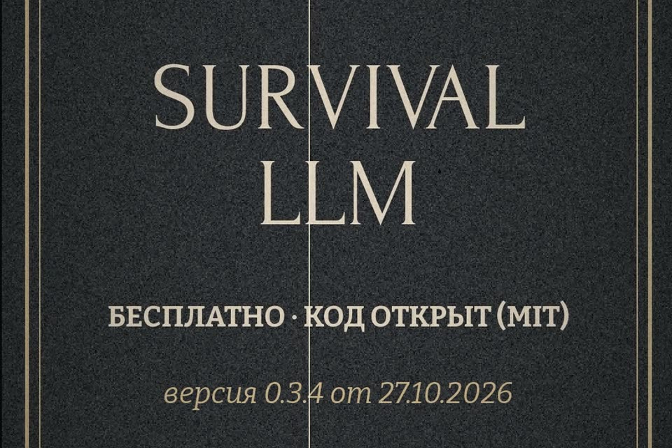

Википедия и нейросеть без интернета
Что скачать заранее, чтобы без сети на ноутбуке были Википедия, справочники и нейросеть. Только официальные сайты.
- бесплатно
- работает офлайн
- Mac и Windows
- ставить заранее
К ролику «Бункер» · проверено по официальным страницам 28 октября 2026

Всё ставится, пока есть интернет: программы сами скачивают десятки гигабайт. Освободите на диске 40–50 ГБ (расчёт ниже). Это справочник, а не врач: в экстренной ситуации звоните 112, если связь есть.
Офлайн-библиотека за 3 шага
Скачайте Survival LLM с официальной страницы
Бесплатная программа с открытым кодом (MIT): нейросеть и библиотека на вашем компьютере.
Страница проекта: brangus.io/survival-llm. Версия 0.3.4 вышла 27 октября 2026.
- Mac: Apple Silicon (M1 и новее), macOS 14 Sonoma и новее.
- Windows: 10 или 11, 64-битная.
- Linux на странице не указан.
Что внутри библиотеки, по словам авторов: около 930 тысяч самых читаемых статей Википедии; медицина (WikiMed, MedlinePlus Национальной медицинской библиотеки США, британский справочник лекарств A–Z, WikEM); памятки Ready.gov (FEMA) и CDC; армейские пособия США по медицине и выживанию; ремонт (iFixit, wikiHow, Appropedia); ответы Stack Exchange про ремонт дома, готовку, сад, походы и радиолюбительство.
Запустите и дождитесь полной установки
Распакуйте, откройте и пройдите настройку, не выключая интернет.
При первом запуске программа сама скачивает движок нейросети (в версии для Mac он встроен), модель под ваш компьютер и библиотеку. Авторы просят дождаться конца установки онлайн. После этого интернет не нужен.
Сколько места
- Библиотека целиком: 9 ГБ на скачивание, 19 ГБ после установки. Без Википедии и iFixit: 1,3 ГБ и 3 ГБ.
- На диске нужно: размер модели + 5 ГБ, плюс около 27 ГБ на время установки полной библиотеки (10 ГБ для облегчённой).
Программа открывается при выключенном Wi-Fi, отвечает на вопрос и показывает, из какого источника взят ответ.
Поставьте Kiwix и русскую Википедию
Kiwix — бесплатная читалка офлайн-архивов Википедии и других сайтов.
- Скачайте Kiwix для своей системы на get.kiwix.org: Windows, macOS (есть в Mac App Store), Linux, Android, iPhone и iPad.
- Архив Википедии выберите в приложении или в каталоге library.kiwix.org.
Какой архив брать (выпуски октября 2026, download.kiwix.org)
- Русская Википедия без картинок (
wikipedia_ru_all_nopic): 17 ГБ. - С картинками (
maxi): 35 ГБ. - Облегчённая (
mini): 5,6 ГБ. - Медицинская подборка русской Википедии (
wikipedia_ru_medicine_maxi): 306 МБ.
Kiwix ищет по статьям, но сам не отвечает на вопросы: нейросети в нём нет.
В режиме самолёта Kiwix открывает статью русской Википедии и ищет по названию.
Справочное
Какую нейросеть поставит Survival LLMзависит от памяти компьютера
Таблица со страницы проекта. «Тест» — сколько из 22 вопросов про блэкаут и первую помощь модель ответила по сути верно, сверяя с официальными рекомендациями. Тест гоняли на более ранней сборке библиотеки.
| Компьютер | Модель | Тест | Скачать |
|---|---|---|---|
| Mac или PC, 16–31 ГБ памяти | IBM Granite 4.2 8B | 14 из 22 | 6 ГБ |
| Windows, от 32 ГБ | NVIDIA Nemotron 3.5 Lightning | 19 из 22 | 25 ГБ |
| Mac, 32–96 ГБ | Qwen3.8 27B | 21 из 22 | 18 ГБ |
| Mac, от 128 ГБ | NVIDIA Nemotron 3.5 Super | 21 из 22 | 80 ГБ |
Пример расчёта для ноутбука на 16 ГБ: модель 6 ГБ + 5 ГБ + 19 ГБ библиотеки и временные 27 ГБ на установку. Плюс 17 ГБ на русскую Википедию в Kiwix.
Лицензиипрограмма и библиотека — разное
Survival LLM — MIT. У каждого источника библиотеки своя лицензия, некоторые разрешают только некоммерческое использование.
Если застряли
Survival LLM не запускается на Mac
Нужен Mac на Apple Silicon (M1 и новее) и macOS 14 Sonoma или новее. На Intel-Mac программа по требованиям не подходит; Kiwix на нём работает.
Не хватает места на диске
Возьмите облегчённую библиотеку Survival LLM (1,3 ГБ, без Википедии и iFixit) и русскую Википедию в Kiwix: mini 5,6 ГБ или без картинок 17 ГБ.
Установка идёт часами
Качаются десятки гигабайт. Не закрывайте программу и не выключайте интернет до конца настройки: без него она не докачает модель и библиотеку.
Чего это не гарантирует
- Это справочник, а не врач. Нейросеть пересказывает справочники и может ошибиться. Маленькие модели, по словам авторов, ошибаются чаще. Открывайте источник, который она показывает, и сверяйте.
- Программы и модели мы сами не запускали. Всё на странице — с официальных страниц Survival LLM и Kiwix на 28 октября 2026. Цифры и версии со временем меняются.
- Без электричества ноутбук проживёт столько, сколько батарея. Подумайте о зарядке заранее.